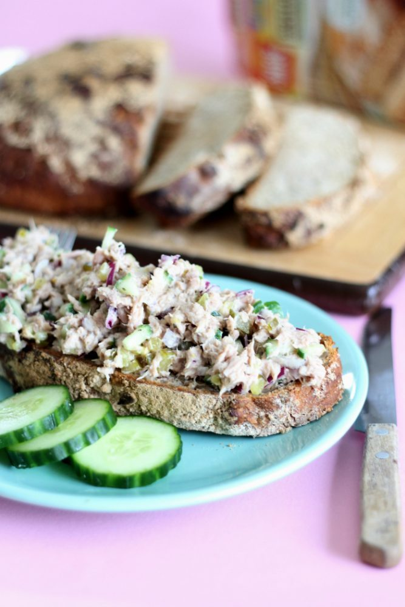

hoofdgerecht
nagerecht
Tonijnsalade met rustiek brood
ingrediënten
- 4 sneden rustiek brood
- 2 blikjes tonijn (ongeveer 300 gram totaal)
- 1 eetlepel mosterd
- 8 eetlepels yoghurt
- 2 eetlepels mayonaise
- 1 theelepel italiaanse kruiden
- 1 rode ui
- 1/3 komkommer
- 10 augurkslices
- eventueel: plakjes komkommer ter decoratie
Bereidingswijze
- Bak of koop het rustieke brood. Zelfgebakken? Bewaar het dan onder een theedoek, zodat het brood niet uitdroogt.
- Maak daarna de tonijnsalade, gebruik hiervoor een grote kom. Laat de blikjes uitlekken en doe de tonijn in de kom. Doe hierbij de mosterd, yoghurt, mayonaise en de Italiaanse kruiden en roer alles goed door elkaar.
- Snijd de rode ui en augurkenslices in hele kleine stukjes. Snijd de komkommer in vieren, haal de zaadlijsten eruit en snijd de rest in kleine stukjes. Doe dit bij de tonijn in de kom. Roer alles weer goed door.
- Proef of je de tonijnsalade genoeg op smaak vind. Voeg eventueel, wat mosterd of kruiden toe voor meer pit. Vind je hem te droog voeg dan wat extra yoghurt of mayonaise toe.
- Neem een mooi bord, snijd een dikke plak van het brood. Leg het brood op het bord en beleg deze met de tonijnsalade. Decoreer met wat extra stukjes komkommer.
